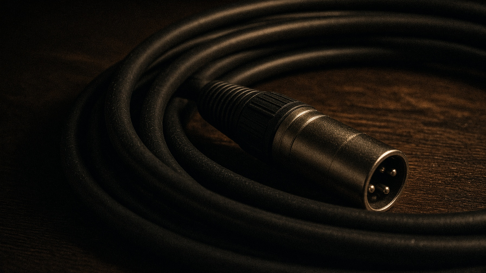
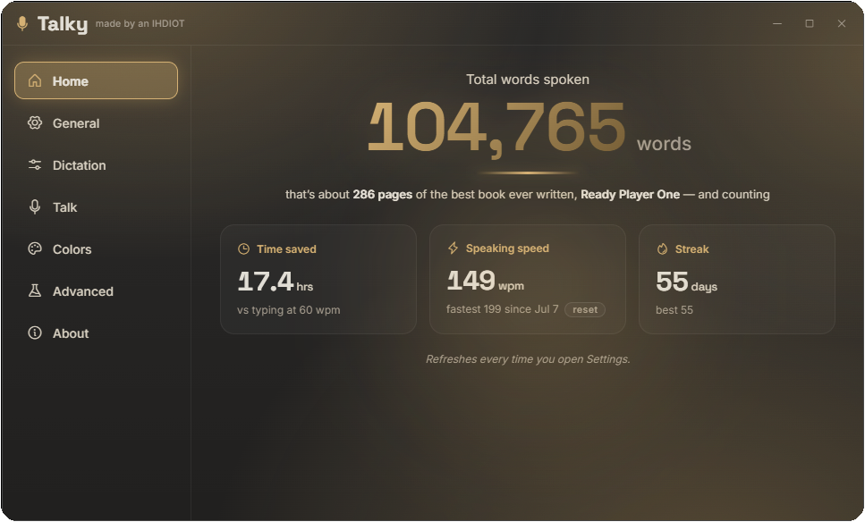

01
Tap the hotkey
One tap and Talky starts listening. No holding anything down — ramble as long as you want.
Ctrl+Win
Talky
made by an IHDIOT
Crossing your I’s and dotting your T’s. You ramble. It writes.
$1. That’s it.
Talky is a computer app — Windows and Apple Silicon Macs. Send this page to your computer and grab it there.
100% on your machine
local models, every time
Nothing leaves your PC
no server to send it to
No account, ever
no sign-up, no email wall
Works on a plane
offline is the whole point
you, out loud
hey so uh yeah I’m gonna be like ten minutes late sorry the uh the dog got out again be there soon
what Talky typed
Gonna be ten minutes late, sorry — the dog got out again. Be there soon.
dropped straight into whatever you’re typing in

Three moves. That’s the whole app.
Talky sits in your system tray and waits. It works anywhere you can type — Discord, Docs, game chat, code editors, browser boxes.
01
One tap and Talky starts listening. No holding anything down — ramble as long as you want.
Ctrl+Win
02
Whisper — the same class of AI the big cloud services use — transcribes on your CPU or GPU. Ramble. Pauses are fine. Nothing types yet.
03
Tap the hotkey again and the whole take lands. On Windows it types at the focused cursor — or pastes into the focused box — with smart punctuation and your personal dictionary. Nothing focused? Clipboard. On Mac it's clipboard — paste with ⌘V.

$1
$1. That’s it. — no subscription, no catch.
One time · $1 · that’s it
The zip is sitting right here. You can take it. A dollar helps an IHDIOT — I’m not gonna DRM a buck.
Help an IHDIOT
A dollar, if you’ve got it.
Venmo is US. PayPal works everywhere. Amount’s already filled in. A dollar is the ask — more doesn’t bounce.
Or just take the zip
I’m not gonna stop you.
Windows 10+ or Apple Silicon. Unzip and go. Honor system.
~11 MB · Mac Apple Silicon
If I ever get ambitious and bolt on fancy stuff, $15 isn’t off the table — so lock it in cheap before I figure that out.
Latest release: v0.12.16
Need it fully offline? Big zip with the model already in it.·All releases & changelogs
Windows 10 or newer, or an Apple Silicon Mac. On Windows an NVIDIA GPU makes it fast; CPU-only works too, just slower and with a lighter model. Uninstall Talky.exe lives in the same folder when you want out. On Mac, paste with ⌘V or right-click → Paste — cursor-typing is coming.
.sha256 checksum next to it on the release page. In PowerShell:Get-FileHash .\Talky-0.12.16-win64.zip -Algorithm SHA256The output should match the contents of the matching
.sha256 file.Alpha builds aren’t code-signed yet, so Windows SmartScreen shows an “unknown publisher” warning the first time you run Talky. That’s expected — here’s the five-second path through it.
Windows pops a blue “Windows protected your PC” dialog. Don’t panic — that’s just “I don’t know this publisher yet.”
It’s the small link in the dialog text. The Run anyway button appears.
One time only — Windows remembers. Talky lands in your tray and you’re dictating in under a minute.
Every build is checksummed, the app is fully offline, and code signing is on the roadmap before the full launch. If Defender ever quarantines a file, open an issue on the releases repo and we’ll get you sorted.
Windows protected your PC
Microsoft Defender SmartScreen prevented an unrecognized app from starting. Running this app might put your PC at risk.
More info ← click this first
the actual dialog you’ll see — two clicks and you’re in
That’s not a marketing line — it’s the architecture. The speech model runs locally, so there is simply no server for your audio to go to.
Make it yours
Five neon accents, plus Candlelight. The mic, the glow, the progress bars, the whole app recolors to match your pick. Cyan’s the default — the rest are one click away.
Gonna be ten minutes late, sorry — the dog got out again. Be there soon.
Talky.app, and allow microphone access when macOS asks. It’s not signed yet, so the first open may be blocked — sometimes silently, so if nothing happens: System Settings → Privacy & Security → “Open Anyway” right after you double-click (on older macOS, right-click → Open works too). One time only. Intel Macs aren’t supported. Rough edges go in an issue on the releases repo.talky.exe --bundle-logs and drop the zip it makes in your report — it’s redacted (no transcripts), just diagnostics.$1. That’s it. The zip is on the page. A dollar if you’ve got it — help an IHDIOT.
A dollar, or just take the zip.